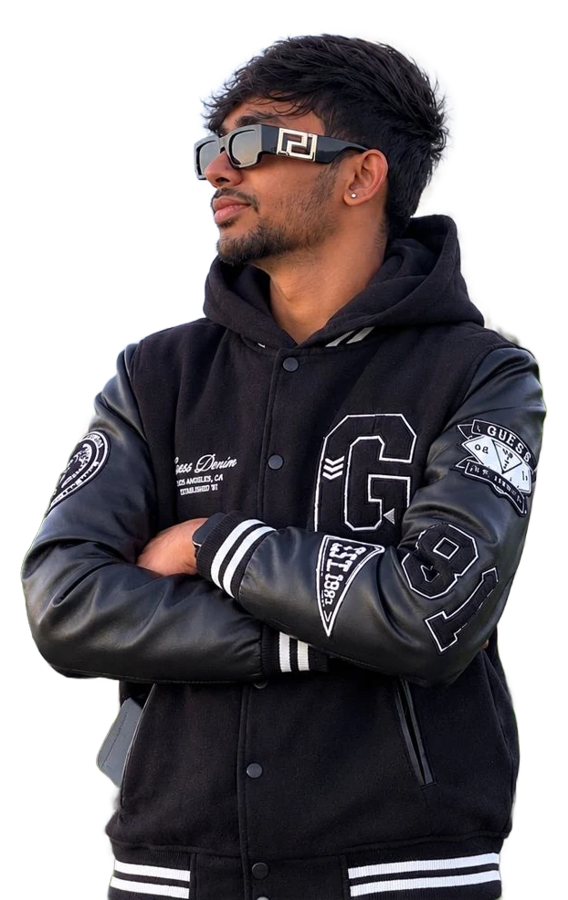

VoltFlex UK · Energy scheduling replay
Compare charging policies through 84 simulated cases, including negative tariffs and degraded feeds. Inspect where the optimiser loses, then explore five more UK projects.

AI & ML Engineer
& Data Scientist.
MSc Data Science & AIUniversity of Liverpool · Term time ends in Jan 2027 and Graduating May 2027

I build LLM agents, retrieval systems and machine learning models, and I test every one on data it hasn't seen.
2.5+ years shipping ML, LLM and data systems at Filed, a tax-tech startup, and DHL Global Forwarding. Based in Liverpool, authorised to work in the UK, open to relocation.
Select a tool to see where I've used it.
Each one has a measured result on held-out data. Open a card for the full case study.
Compare charging policies through 84 simulated cases, including negative tariffs and degraded feeds. Inspect where the optimiser loses, then explore five more UK projects.
Pick a project, then hover or tab through the bars for exact numbers. Every figure comes from the project's repository.
Forecasting, guardrails, services and tools. Work still running says so.
Hiring for AI, ML or data science in the UK? Send a message, or reach me directly.
chrishpepfelixa@gmail.com ↗Answers come from a fixed set Chrish wrote. For anything else, email him.